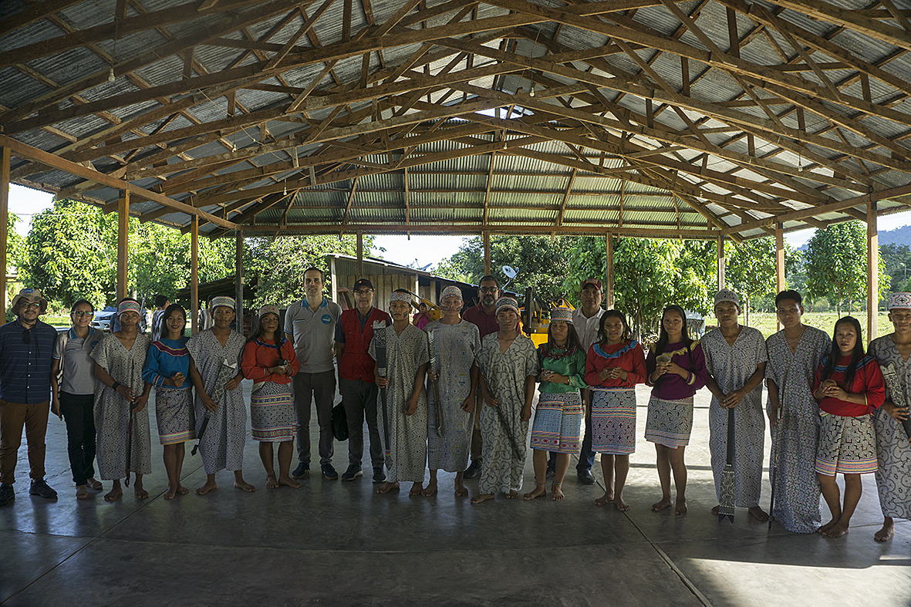
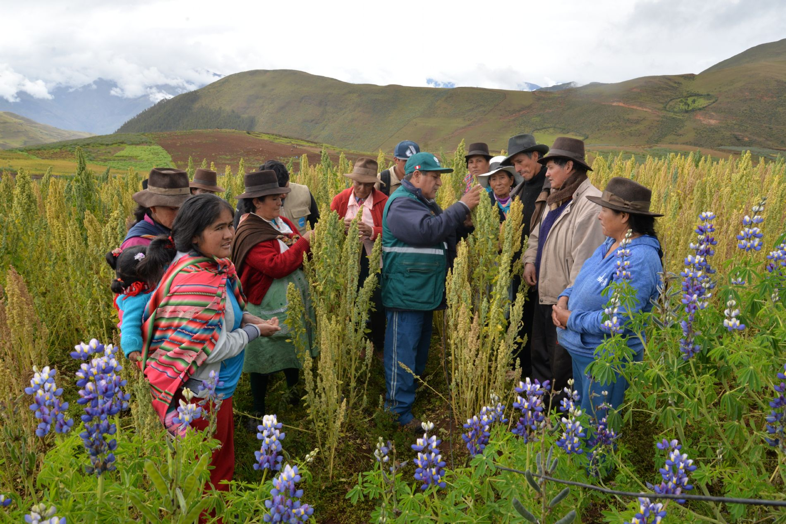

AYUDA EN TUS MANOS
Trabajamos para mejorar la vida de las personas
AYUDA EN TUS MANOS
Actualmente estamos presentes en 16 países del mundo. Nuestro trabajo se concreta en cinco áreas básicas y un área transversal, Gastronomía Social a través de la cual impulsamos a la sociedad a través de la gastronomía a nivel nacional e internacional.
Desarrollo Económico

Migración y refugiados

Educacion

Gobernabilidad y Derechos Humanos

Medioambiente y cambio climático

Gastronomía Social